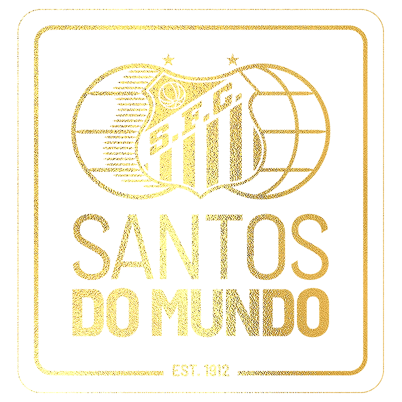
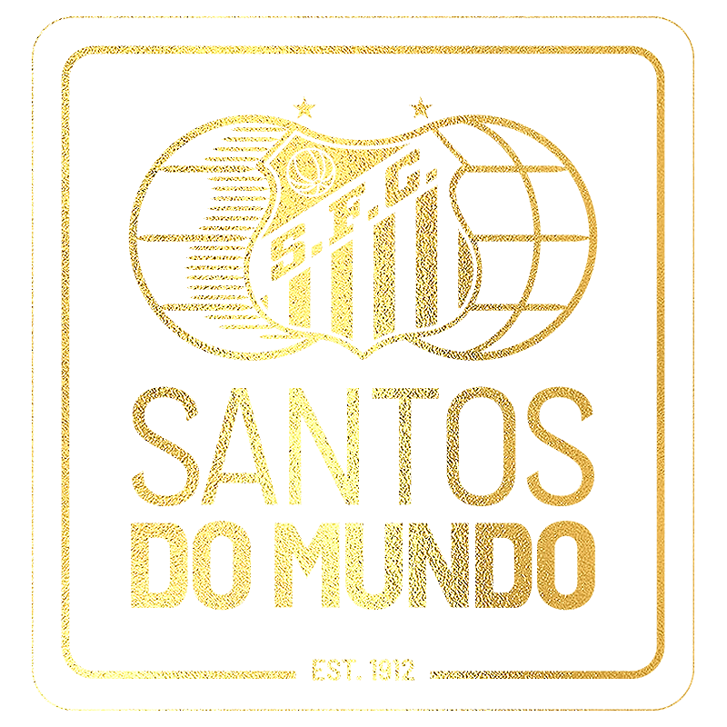
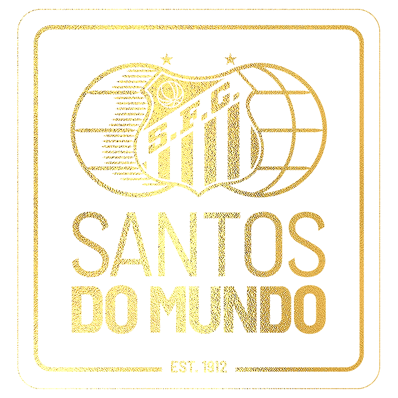
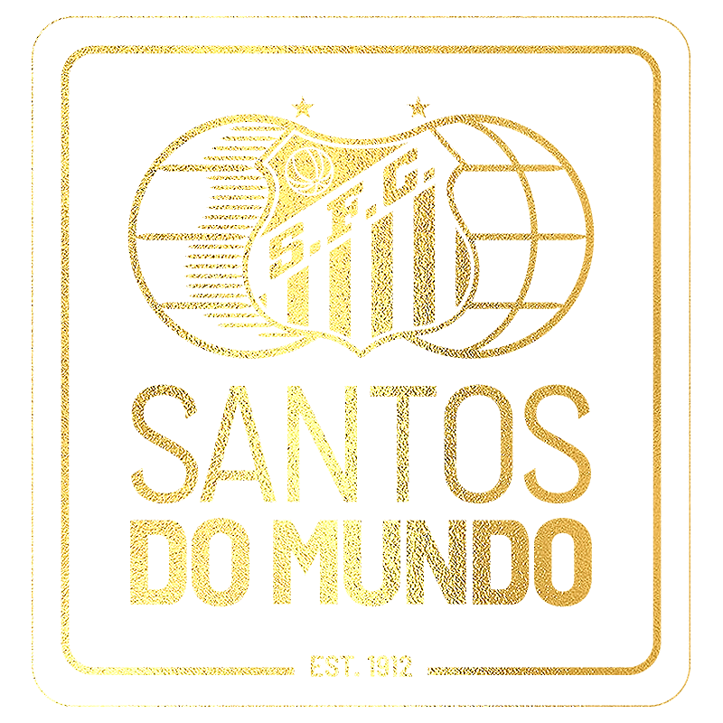

Desde pequeno acompanhava o Santos, influenciado pelo meu Pai José, ficavamos tarde das noites assistindo o Santos de Neymar e Cia. E cada vez a paixão por esse time foi surgindo. Nas vitórias e nas derrotas somos sempre Santos!!!
O Santos viveu por bons e maus momentos na vida, já tive emoções de Raiva, Tristeza, Felicidade, já chorei muito por esse time, mas nunca o abandonei jamais.
O Santos Futebol Clube foi fundado em 14 de abril de 1912. É, até hoje, o único time do Mundo que chegou a marca de 12.000 Gols, o único a parar uma guerra e com revelações que mudaram a hístoria do futebol Mundial como o Rei Pelé Tri campeão mundial, Neymar jr. Craque da geração atual.
A ONG é responsável pelo desenvolvimento de crianças e adultos que vivem em regiões de extrema pobreza. Tão bem representado como símbolo de resistência e amor pelo esporte, o manto alvinegro utilizado pela criança também motivou o Santos Futebol Clube a aderir esta importante causa humanitária. Dentre seus pontos de atuação, a ONG Missão África tem ações em escolas de educação infantil e programas de capacitação de profissionais na área de saúde e educação. A ONG mantém um centro nutricional para crianças desnutridas de 0 a 2 anos, levando também atendimento odontológico para a população. Desde 2012 a Missão África já realizou mais de 40 mil atendimentos médicos e mais de 5 mil atendimentos odontológicos no continente.

Contribuir de forma diferenciada para o desenvolvimento do ser humano em sua totalidade, estabelecendo assim maior justiça social por meio da promoção da saúde e da educação de crianças e adultos que vivem em regiões de extrema pobreza, contribuindo para a transformação da realidade enquanto pessoa bem como da comunidade que estão inseridos.
Santos F.C.